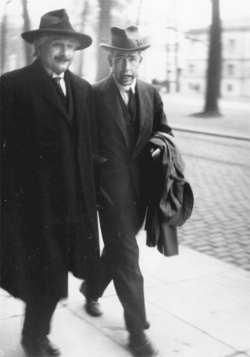

Einstein và Bohr
Trong khi những người khác tiếp tục phát triển cơ học lượng tử, chẳng chút nản lòng trước cái bất định nằm ở cốt lõi của nó, Einstein vẫn kiên trì đeo đuổi cuộc tìm kiếm đơn độc nhằm tìm ra một cách giải thích hoàn chỉnh về vũ trụ – một lý thuyết trường thống nhất có thể gắn điện trường, từ trường, lực hấp dẫn và cơ học lượng tử lại với nhau. Trong quá khứ, tài năng của ông nằm ở việc tìm ra mối liên kết còn thiếu giữa các lý thuyết. Những câu mở đầu trong các bài báo về tính tương đối tổng quát và lượng tử ánh sáng năm 1905 của ông là ví dụ153.
Ông hy vọng có thể mở rộng các phương trình trường hấp dẫn trong Thuyết Tương đối rộng để chúng mô tả được cả trường điện từ. Einstein lý giải trong bài giảng Nobel: “Một trí tuệ truy cầu sự thống nhất sẽ không thỏa mãn với quan điểm cho rằng nên tồn tại hai trường hoàn toàn độc lập với nhau về bản chất. Chúng tôi tìm kiếm một lý thuyết trường thống nhất về toán học trong đó trường hấp dẫn và trường điện từ được diễn giải như là các thành phần hoặc các biểu hiện khác nhau của một trường đồng nhất.”
Ông hy vọng, một lý thuyết thống nhất như thế có thể làm cơ học lượng tử tương thích với Thuyết Tương đối. Ông công khai lôi kéo Planck tham gia nhiệm vụ này bằng lời chúc trong bữa tiệc kỷ niệm sinh nhật lần thứ 60 của người dìu dắt mình năm 1918: “Xin chúc ông thành công trong việc thống nhất lý thuyết lượng tử với điện động lực học và cơ học trong một hệ thống logic duy nhất.”
Phần lớn cuộc tìm kiếm của Einstein là một loạt các bước sai được đánh dấu bằng tính phức tạp tăng dần về mặt toán học, bắt đầu bằng việc ông đáp lại các bước sai của những người khác. Bước sai đầu tiên là do nhà vật lý–toán Hermann Weyl; năm 1918, ông này đã đề xuất một cách thức mở rộng hình học của Thuyết Tương đối rộng, mà có vẻ cách này cũng sẽ được dùng để hình học hóa trường điện từ.
Ban đầu, Einstein rất đỗi ấn tượng. Ông nói với Weyl: “Đúng là biểu hiện hàng đầu của thiên tài.” Nhưng ông có một vấn đề với nó: “Tôi vẫn chưa thể giải quyết được lý lẽ phản đối của tôi đối với vấn đề thanh đo.”
Theo lý thuyết của Weyl, các thanh đo và đồng hồ có thể thay đổi tùy thuộc vào con đường chúng đi trong không gian. Nhưng các quan sát thực nghiệm cho thấy hiện tượng đó không xảy ra. Trong bức thư tiếp theo, sau thêm hai ngày suy ngẫm, Einstein châm nổ quả bong bóng khen ngợi trước đó dành cho Weyl bằng một nhận xét châm biếm. Ông viết cho Weyl: “Chuỗi lập luận của anh rất đầy đủ. Trừ việc phù hợp với thực tế ra, nó chắc chắn là một thành tựu trí tuệ to lớn.”
Sau đó là đề xuất năm 1919 của Theodor Kaluza154, một giáo sư toán học tại Königsberg. Theo ông này, nên thêm một chiều thứ năm vào bốn chiều không – thời gian. Kaluza giả định thêm rằng, chiều không gian được bổ sung này có hình tròn, có nghĩa là nếu đi theo hướng của nó, ta sẽ quay lại điểm xuất phát, giống như khi đi vòng quanh một khối trụ vậy.
Kaluza không tìm cách mô tả thực tại vật lý hay vị trí của chiều không gian được bổ sung này. Nói cho cùng thì ông là một nhà toán học, vì vậy ông không phải làm việc này. Thay vào đó, ông tạo ra nó như một công cụ toán học. Metric không – thời gian bốn chiều của Einstein đòi hỏi 10 đại lượng để mô tả tất cả các mối quan hệ tọa độ có thể có cho một điểm bất kỳ. Theo Kaluza, cần có 15 đại lượng như vậy để xác định rõ khía cạnh hình học cho không gian năm chiều.
Khi mày mò với phần toán học của cấu trúc phức tạp này, Kaluza thấy rằng bốn trong số năm đại lượng thêm vào có thể được sử dụng để tạo ra các phương trình điện từ Maxwell. Ít nhất là về mặt toán học, đây có thể là một cách để tạo ra một lý thuyết trường thống nhất lực hấp dẫn và điện từ học.
Một lần nữa, Einstein vừa ấn tượng vừa giữ đầu óc phê phán. Ông viết cho Kaluza: “Tôi chưa bao giờ nghĩ đến một hình trụ năm chiều. Xem qua thì tôi cực kỳ thích ý tưởng của anh.” Không may là, chẳng có lý do gì để chắc rằng đa phần kiến thức toán học này thật sự có bất cứ cơ sở nào trong thực tại vật lý. Ở vị thế một nhà toán học thuần túy, Kaluza đưa ra điều này và thách thức các nhà vật lý tìm ra nó. “Vẫn khó mà tin được rằng tất cả các mối quan hệ này, khi nằm trong sự thống nhất hoàn chỉnh gần như không gì vượt qua được, rốt cuộc lại chỉ là trò đùa cám dỗ của một sự tình cờ thất thường,” ông viết. “Nếu tìm thấy thêm một hình thức luận toán học thuần túy nằm sau những mối liên kết phỏng đoán này, khi đó chúng ta sẽ có thêm một chiến thắng mới từ Thuyết Tương đối rộng của Einstein.”
Đến thời điểm đó, Einstein đã tự chuyển sang tin tưởng vào hình thức luận toán học, một công cụ đã chứng tỏ là rất hữu ích trong bước tiến cuối cùng đưa ông đến với Thuyết Tương đối rộng. Khi một số vấn đề được giải quyết, ông đã giúp Kaluza công bố bài báo vào năm 1921, và tiếp bước bằng các bài báo của riêng mình.
Đóng góp tiếp theo là của nhà vật lý Oskar Klein155, con trai của giáo sĩ Do Thái đầu tiên của Thụy Điển và là một học trò của Niels Bohr. Đối với Klein, một lý thuyết trường thống nhất không chỉ là một cách để thống nhất trường hấp dẫn và trường điện từ, mà còn là hy vọng nhằm giải thích một số điều bí ẩn lẩn khuất trong cơ học lượng tử. Có lẽ nó thậm chí có thể đưa ra một cách để tìm ra các “biến số ẩn” có thể triệt tiêu tính bất định.
Klein giỏi vật lý hơn là toán học, vì vậy ông chú trọng hơn Kaluza đến cái có thể là thực tại vật lý của chiều không gian thứ tư. Ý tưởng của ông là nó có thể cuộn tròn lại, nhỏ đến mức không thể phát hiện được, và phóng chiếu thành một chiều mới từ mọi điểm trong không gian ba chiều quan sát được của chúng ta.
Giả thuyết này thật tài tình, song lại không giải thích gì nhiều về những kiến giải kỳ quặc nhưng ngày càng được chứng thực một cách rõ ràng về cơ học lượng tử hay những bước tiến mới của vật lý hạt. Các lý thuyết của Kaluza – Klein bị gạt bỏ, tuy nhiên, trong nhiều năm Einstein sẽ còn quay lại với một số khái niệm này. Trên thực tế, các nhà vật lý hiện nay cũng vẫn làm vậy. Ảnh hưởng của các ý tưởng này, đặc biệt là dưới dạng các chiều compact bổ sung, đang tồn tại trong lý thuyết dây.
Xuất hiện tiếp theo trong cuộc tranh luận là Arthur Eddington, nhà thiên văn học người Anh và cũng là nhà vật lý có những quan sát nhật thực nổi tiếng. Ông đã điều chỉnh lại phần toán của Weyl bằng cách sử dụng khái niệm hình học được gọi là liên thông affine156. Einstein đọc được các ý tưởng của Eddington khi ông đang trên đường đi Nhật, và ông lấy chúng làm cơ sở cho lý thuyết mới của mình. Ông thích thú viết cho Bohr: “Tôi tin rằng cuối cùng tôi đã hiểu mối quan hệ giữa điện học và lực hấp dẫn. Eddington đã đến gần với chân lý hơn Weyl.”
Lúc này, giai điệu mê đắm của lý thuyết thống nhất đã hoàn toàn mê hoặc Einstein. Ông nói với Weyl: “Còn rơi rớt lại là vài nụ cười lạnh lùng của tự nhiên.” Trong chuyến đi xuyên châu Á bằng tàu hơi nước, ông đã viết xong một bài báo mới, và khi đến Ai Cập vào tháng Hai năm 1923, ông lập tức gửi nó cho Planck ở Berlin để công bố. Ông tuyên bố, mục tiêu của ông là “hiểu trường hấp dẫn và trường điện từ là một”.
Một lần nữa, tuyên bố của Einstein trở thành đầu đề trên các tờ báo khắp thế giới. “Einstein mô tả lý thuyết mới nhất của mình,” tờ New York Times tuyên bố. Và một lần nữa, tính phức tạp trong phương pháp của ông lại được đẩy lên cao. Như một tít phụ cảnh báo: “Khó hiểu đối với dân không chuyên”.
Nhưng Einstein nói với báo chí rằng nó hoàn toàn không phức tạp. Phóng viên trích lời ông: “Tôi có thể nói với các bạn nội dung của nó chỉ trong một câu thôi. Nó nói về mối quan hệ giữa điện học và lực hấp dẫn”. Ông cũng ghi công cho Eddington khi nói: “Nó dựa trên các lý thuyết của nhà thiên văn học người Anh.”
Trong những bài báo tiếp theo trong năm đó, Einstein cũng nêu rõ rằng mục tiêu của ông không đơn thuần là thống nhất, mà là tìm ra cách khắc phục những cái bất định và xác suất trong lý thuyết lượng tử. Nhan đề của một bài báo năm 1923 nói rõ công cuộc tìm kiếm này: “Lý thuyết trường có mang lại khả năng tìm ra giải pháp cho các vấn đề lượng tử hay không?”.
Bài báo bắt đầu bằng việc mô tả các lý thuyết điện từ trường và trường hấp dẫn cung cấp những khẳng định mang tính nhân quả dựa trên các phương trình đạo hàm riêng kết hợp với các điều kiện ban đầu như thế nào. Trong lĩnh vực lượng tử, ta khó có thể chọn hoặc áp dụng những điều kiện ban đầu một cách tùy ý. Tuy vậy, liệu chúng ta có thể có được một lý thuyết nhân quả dựa trên các phương trình trường hay không?
Einstein tự trả lời một cách lạc quan: “Chắc chắn là có.” Điều cần thiết, theo ông, là một phương pháp “xác định dư”157 các biến của trường trong các phương trình thích hợp. Cách xác định dư trở thành một công cụ khác được đề xuất mà ông sử dụng dù không hiệu quả nhằm giải quyết điều mà ông khăng khăng gọi là “vấn đề” bất định lượng tử.
Trong hai năm, Einstein đã kết luận rằng các phương pháp này đều có thiếu sót. Ông viết: “Bài báo đã công bố [năm 1923] của tôi không đưa ra lời giải chính xác cho vấn đề này.” Nhưng bất kể thế nào, ông đã tìm ra một phương pháp khác. “Sau nỗ lực tìm kiếm không ngừng nghỉ trong hai năm qua, tôi nghĩ tôi đã tìm ra lời giải đúng.”
Phương pháp mới này của ông là tìm ra một biểu thức đơn giản nhất cho thể cho định luật hấp dẫn khi không có mặt bất kỳ trường điện từ nào, rồi sau đó tổng quát hóa nó. Theo ông, lý thuyết điện từ của Maxwell đưa đến biểu thức gần đúng đầu tiên.
Giờ ông dựa vào toán học nhiều hơn vào vật lý. Tensor metric mà ông đưa vào các phương trình của Thuyết Tương đối rộng có 10 đại lượng độc lập, nhưng nếu làm nó bất đối xứng, ta sẽ có 16 đại lượng, đủ để tính được điện từ trường.
Nhưng cũng giống các phương pháp khác, phương pháp này không dẫn đến đâu cả. “Vấn đề với ý tưởng này, như Einstein khổ sở nhận ra, là ở chỗ quả thật không có gì gắn 6 thành phần điện từ trường này với 10 thành phần của tensormetric thông thường mô tả trường hấp dẫn,” nhà vật lý của Đại học Texas, Steven Weinberg158, nhận xét. “Một phép biến đổi Lorentz hay bất cứ phép biến đổi tọa độ nào khác có thể chuyển đổi điện trường và từ trường thành các tổ hợp điện từ trường, nhưng không có phép biến đổi nào có thể kết hợp chúng với trường hấp dẫn.”
Không hề nản lòng, Einstein quay lại nghiên cứu tiếp, lần này ông thử một phương pháp gọi là “song song từ xa” [distant parallelism]. Nó cho phép các vector ở những khu vực khác nhau trong không gian cong liên hệ với nhau và từ đó dẫn đến những dạng tensor mới. Đáng ngạc nhiên nhất (ông nghĩ vậy), ông có thể đưa ra các phương trình mới mà không cần hằng số Planck phiền hà biểu diễn cho lượng tử.
Tháng Một năm 1929, ông viết cho Besso: “Nghe thì nó có vẻ cổ lỗ, và những đồng nghiệp yêu quý của tôi và cả anh nữa sẽ há hốc mồm ngạc nhiên vì hằng số Planck không có trong các phương trình. Nhưng khi họ đã đạt đến đỉnh điểm của sự cuồng mốt thống kê, họ sẽ trở lại ăn năn với bức tranh không – thời gian, và khi đó, những phương trình này sẽ tạo thành điểm khởi đầu.”
Đúng là một giấc mộng đẹp! Một thuyết thống nhất không có thứ lượng tử tràn lan bừa bãi. Các phương pháp thống kê hóa ra chỉ là cơn cuồng thoáng qua. Một sự trở lại với các lý thuyết trường tương đối. Các đồng nghiệp á khẩu vì ăn năn.
Trong thế giới vật lý, nơi giờ đây đã chấp nhận cơ học lượng tử, Einstein và những cuộc tìm kiếm một lý thuyết thống nhất của ông bắt đầu bị xem là kỳ dị. Nhưng trong trí tưởng tượng của công chúng, ông vẫn là một siêu sao. Cơn cuồng rộ lên quanh lần công bố bài báo dài năm trang của ông vào tháng Một năm 1929, vốn thuần túy là cố gắng mới nhất trong chuỗi những cố gắng lý thuyết không để lại ấn tượng đó của ông, lớn đến sửng sốt. Các nhà báo từ khắp thế giới tập trung quanh khu căn hộ nhà ông, và Einstein chỉ có thể thoát khỏi họ bằng cách trốn tới căn biệt thự của bác sỹ chăm sóc cho ông nằm ở vùng ngoại ô, ven sông Havel. Nhiều tuần trước đó, tờ New York Times đã bắt đầu đánh trống khua chiêng với một bài báo có tiêu đề “Einstein sắp có phát kiến vĩ đại: phẫn nộ vì bị xâm phạm”.
Đến ngày 30 tháng Một năm 1929, bài báo của Einstein mới được công bố, nhưng suốt cả tháng trước đó, tờ báo này đã cho đăng một loạt những thông tin rò rỉ và dự đoán. Chẳng hạn, các mẫu tiêu đề trên New York Times như sau:
Ngày 12 tháng Một: “Einstein mở rộng Thuyết Tương đối / Công trình mới tìm cách thống nhất các định luật về trường hấp dẫn và trường điện từ / Ông gọi nó là ‘cuốn sách’ lớn nhất của mình / Nhà khoa học Berlin đã mất 10 năm chuẩn bị”
Ngày 19 tháng Một: “Einstein ngạc nhiên với lý thuyết khuấy đảo / Vô hiệu hóa 100 nhà báo trong suốt một tuần / BERLIN – Tuần trước, toàn bộ báo giới ở đây đã tập trung tất cả nỗ lực tìm mua bản thảo năm trang ‘Lý thuyết trường’ mới của Tiến sỹ Albert Einstein’. Ngoài ra, có hàng trăm bức điện tín từ khắp nơi trên thế giới, cùng những phong bì thư trống dán sẵn tem và vô số bức thư hỏi xin bản mô tả chi tiết hoặc bản sao bản thảo, đổ về.”
Ngày 25 tháng Một (trang nhất): “Einstein quy giản toàn bộ ngành vật lý vào một định luật / Lý thuyết điện - hấp dẫn mới liên kết tất cả mọi hiện tượng, nhà diễn giải ở Berlin cho biết / Chỉ có một chất / Giả thuyết mở ra giấc mơ con người có thể trôi nổi lơ lửng trong không khí, một giáo sư ở N.Y.U cho biết / BERLIN – Công trình mới nhất của Giáo sư Einstein, ‘một lý thuyết trường mới’ sẽ sớm ra mắt báo chí, quy giản các định luật cơ bản về cơ học tương đối tính và điện học thành một công thức duy nhất, theo người đã dịch nó ra tiếng Anh.”
Einstein đã bắt đầu tham gia màn diễn từ chỗ trú ngụ của mình tại sông Havel. Thậm chí trước khi bài báo nhỏ của mình được công bố, ông đã trả lời phỏng vấn về nó với một tờ báo Anh. Ông nói: “Tham vọng lớn nhất của tôi là giải quyết tính chất hai mặt của các quy luật tự nhiên thành tính nhất thể. Mục đích công trình của tôi là đơn giản hóa hơn nữa, và đặc biệt quy giản thành một công thức giải thích các trường hấp dẫn và trường điện từ. Vì lý do này, tôi gọi nó là đóng góp cho ‘một lý thuyết trường thống nhất’… Nhưng chỉ lúc này, chúng ta mới biết rằng lực làm các electron chuyển động theo quỹ đạo elip xung quanh hạt nhân của nguyên tử giống với lực làm Trái đất của chúng ta chuyển động theo chu kỳ hằng năm quanh Mặt trời.” Tất nhiên là ông không biết điều đó, và chúng ta, thậm chí đến bây giờ vẫn không.
Ông cũng trả lời phỏng vấn tạp chí Time, tạp chí này đã đưa ông lên trang bìa, đây là lần đầu tiên trong số năm lần ông xuất hiện trên trang bìa. Tạp chí này nói rằng, trong khi thế giới chờ đợi “lý thuyết trường chặt chẽ sâu sắc” của ông được công bố, Einstein lại nặng nhọc đi lại quanh nơi trú ẩn của ông ở vùng quê, trông “phờ phạc, lo lắng, cáu kỉnh”. Tạp chí này giải thích rằng biểu hiện ốm đau đó là do những cơn đau dạ dày và các đoàn khách kéo đến liên tục. Ngoài ra, tạp chí này còn viết: “Tiến sỹ Einstein, giống như nhiều học giả và người Do Thái khác, chẳng chịu tập thể dục gì cả.”
Viện Hàn lâm Phổ in 1.000 bản bài báo của Einstein, một số lượng lớn bất thường. Khi được công bố vào ngày 30 tháng Một, tất cả các bản này nhanh chóng được bán hết và Viện Hàn lâm phải in thêm 3.000 bản nữa. Một bộ bài báo được dán trên cửa kính của một cửa hàng tạp hóa ở London, đám đông đã chen nhau ở đây, cố gắng hiểu chuyên luận toán học phức tạp, có 33 phương trình không dành cho những người đi mua sắm. Đại học Wesleyan ở Connecticut trả một khoản tiền lớn cho bản thảo viết tay để trưng nó như là báu vật tại thư viện trường.
Các tờ báo của nước Mỹ rơi vào cảnh luống cuống, không biết phải làm sao. Tờ New York Herald Tribune quyết định in toàn bộ bài báo nhưng lại gặp khó khăn trong việc tìm cách gửi qua điện tín tất cả các chữ cái và kí hiệu Hy Lạp. Vì vậy, họ đã thuê một số giáo sư vật lý ở Columbia xây dựng một hệ thống mã hóa rồi cấu trúc lại bài báo ở New York. Họ đã thành công. Đối với đa số độc giả, bài báo hoa mỹ của tờ Tribune nói rõ cách thức truyền gửi bài báo thậm chí còn dễ hiểu hơn nhiều so với bản thân bài báo của Einstein.
Về phần mình, tờ New York Times đã đưa lý thuyết trường thống nhất lên tầm tôn giáo bằng cách cử các phóng viên túc trực tại các nhà thờ trong thành phố ngày Chủ nhật đó để đưa tin về các bài thuyết giảng liên quan đến nó. Nhan đề trên tờ báo này tuyên bố: “Einstein gần như được xem là huyền bí”. Người ta dẫn lời Đức cha Henry Howard rằng lý thuyết thống nhất của Einstein củng cố hợp đề của thánh Paul và “tính nhất thể” của thế giới. Một nhà khoa học Cơ đốc nói rằng lý thuyết này là sự củng cố về mặt khoa học cho thuyết vật chất ảo của Mary Baker Eddy159. Những người khác xem đó là “bước tiến xa của tự do” và là “một bước tiến đến với tự do phổ quát”.
Các nhà thần học và giới báo chí có thể ồ à thán phục, nhưng các nhà vật lý thì không. Eddington, vốn là người hâm mộ Einstein, bày tỏ những nghi ngờ. Trong suốt năm sau đó, Einstein tiếp tục chỉnh sửa lý thuyết của mình, và quả quyết với bạn bè rằng các phương trình này thật “đẹp”. Nhưng ông thừa nhận với em gái mình rằng công trình của ông đã nhận được “sự phản đối đầy hoài nghi và gay gắt của các đồng nghiệp”.
Trong số những người thất vọng có Wolfgang Pauli. Pauli gay gắt nói với Einstein rằng các phương pháp mới của Einstein “đã phản bội lại” Thuyết Tương đối rộng của ông, và quá dựa vào hình thức toán học, một thứ không gắn với thực tại vật lý. Ông này cáo buộc Einstein “đã đi quá xa đến địa hạt của các nhà toán học thuần túy” và tiên đoán rằng “muộn nhất là một năm thôi, ông sẽ phải từ bỏ toàn bộ cách tính song song từ xa này, như anh đã từ bỏ lý thuyết liên thông affine trước đó.”
Pauli đã đúng. Sau một năm, Einstein đã từ bỏ thuyết này, nhưng ông không từ bỏ việc tìm kiếm. Thay vào đó, ông lại tập trung vào một phương pháp sửa đổi khác đưa đến nhiều tít báo hơn nữa, nhưng lại không đạt được bước tiến trong việc giải quyết những câu hỏi ông đặt ra cho mình. “Einstein hoàn thành lý thuyết trường thống nhất,” tờ New York Times giật tít này ngày 23 tháng Một năm 1931, và chẳng nói gì nhiều để cho biết rằng đây không phải lần đầu tiên và cũng chẳng phải lần cuối cùng những thông báo như thế được đưa ra. Và sau đó lại một lần nữa, ngày 26 tháng Mười năm đó, tờ này lại có tít: “Einstein công bố một lý thuyết trường mới.”
Cuối cùng, tháng Một năm sau, ông thừa nhận với Pauli: “Rốt cuộc anh đã đúng.”
Mọi việc còn tiếp diễn như vậy trong hai thập kỷ nữa. Không nỗ lực nào của Einstein mang đến một lý thuyết trường thống nhất thành công. Thực tế, với những phát hiện về các hạt và các lực mới, vật lý đang ngày càng trở nên kém thống nhất. Trong điều kiện tốt nhất, nỗ lực của Einstein đã được biện hộ bằng lời khen tặng yếu ớt từ nhà toán học người Pháp Elie Joseph Cartan160 năm 1931: “Ngay cả nếu nỗ lực của ông ấy không thành công, nó sẽ buộc chúng ta phải suy nghĩ đến những câu hỏi lớn về nền tảng của khoa học.”
Cuộc chiến ngoan cường cuối cùng mà Einstein thực hiện chống lại sự công kích của cơ học lượng tử lên đến đỉnh điểm tại hai hội nghị Solvay đáng nhớ ở Brussels. Ở cả hai hội nghị này, ông đều đóng vai trò là người khiêu khích, cố gắng tìm ra lỗ hổng trong lý thuyết mới đang thắng thế.
Vào tháng Mười năm 1927, có mặt ở hàng đầu là ba bậc thầy đã giúp mở ra một kỷ nguyên vật lý mới nhưng giờ lại hoài nghi chính cái địa hạt lạ lùng mà nó sinh ra là cơ học lượng tử: Hendrik Lorentz, 74 tuổi, chỉ một vài tháng sau đó ông qua đời, người đoạt giải Nobel cho công trình về bức xạ điện từ; Max Planck, 69 tuổi, người đoạt giải Nobel cho lý thuyết về lượng tử; và Albert Einstein, 48 tuổi, người đoạt giải Nobel vì đã phát hiện định luật hiệu ứng quang điện.
Trong số 26 người tham dự còn lại, có hơn một nửa đã đoạt hoặc sẽ đoạt giải Nobel. Những tài năng trẻ tuổi trong lĩnh vực cơ học lượng tử mới cũng có mặt ở đó, với hy vọng sẽ cải biến hoặc thuyết phục được Einstein: Werner Heisenberg, 25 tuổi, Paul Dirac, 25 tuổi, Wolfgang Pauli, 27 tuổi, Louis de Broglie, 35 tuổi, và đến từ nước Mỹ có Arthur Compton161, 35 tuổi. Ngoài ra còn có Erwin Schrödinger, 40 tuổi, bị kẹt giữa những người trẻ tuổi hăng hái và những người hoài nghi đứng tuổi. Tất nhiên còn có cả người hăng hái đứng tuổi Niels Bohr, 42 tuổi, người đã góp phần quan trọng cho sự ra đời của cơ học lượng tử với mô hình nguyên tử và trở thành người bảo vệ trung thành cho các ngóc ngách phản trực quan của nó.
Lorentz đã đề nghị Einstein trình bày trước hội nghị một báo cáo về tình hình của cơ học lượng tử. Einstein nhận lời, sau đó do dự. Ông trả lời: “Sau khi đắn đo suy nghĩ, tôi đi đến kết luận rằng mình không đủ năng lực trình bày một báo cáo như thế theo lối thích đáng với tình hình hiện tại. Một phần là vì tôi không tán thành phương pháp tư duy thuần túy thống kê mà các lý thuyết mới lấy đó làm cơ sở.” Rồi ông buồn rầu nói thêm: “Xin ông đừng giận tôi.”
Thay vào đó, Niels Bohr phát biểu khai mạc. Ông không tiếc lời mô tả những thành quả của cơ học lượng tử. Ông cho rằng tính tất định và tính nhân quả chặt chẽ không tồn tại trong lĩnh vực hạ nguyên tử. Không có các định luật tất định mà chỉ có xác suất và ngẫu nhiên. Chẳng có nghĩa lý gì khi nói về một “thực tại” độc lập với các quan sát và đo lường của chúng ta. Tùy thuộc vào loại thí nghiệm mà ta chọn, ánh sáng có thể là sóng hoặc hạt.
Einstein hầu như không phát biểu gì tại các buổi họp chính thức. Ông thừa nhận ngay lúc bắt đầu: “Tôi phải xin lỗi vì chưa hiểu đủ sâu về cơ học lượng tử.” Nhưng qua các bữa tối và các cuộc thảo luận đến khuya, rồi lại tiếp tục vào các bữa sáng, ông thường đưa Bohr và những người ủng hộ Bohr vào những cuộc tranh luận sinh động, được tăng thêm phần sôi nổi bằng chuyện cười về việc Thượng đế chơi trò xúc xắc. Pauli nhớ Einstein đã lập luận: “Ta không thể tạo ra một lý thuyết từ nhiều cái ‘có thể’ được. Xét đến cùng, điều đó sai, cho dù nó đúng về mặt thực nghiệm và logic.”
Heisenberg nhớ lại: “Chẳng mấy chốc các cuộc thảo luận nhanh chóng tập trung vào cuộc đấu tay đôi giữa Einstein và Bohr về việc liệu lý thuyết nguyên tử ở dạng thức hiện tại có thể được xem là giải pháp tối hậu không.” Như Ehrenfest kể lại với các học trò của mình sau đó về các cuộc tranh luận này: “Ồ, thú vị lắm.”
Einstein tiếp tục dùng đến các thí nghiệm tưởng tượng, cả trong hội nghị lẫn trong các cuộc thảo luận không chính thức, những thí nghiệm này được thiết kế để chứng minh rằng cơ học lượng tử không mô tả đầy đủ về thực tại. Ông cố gắng chứng minh, qua một công cụ tưởng tượng, rằng ta có thể đo chính xác tất cả các đặc điểm của một hạt chuyển động, ít nhất là về mặt khái niệm.
Chẳng hạn, một trong các thí nghiệm tưởng tượng của Einstein sử dụng một tia electron được truyền qua một khe hở trên tấm chắn, sau đó vị trí của các electron này được ghi lại khi chúng đập vào tấm phim. Nhiều yếu tố khác nhau, chẳng hạn như một tấm chắn sáng đóng mở khe tức thời, được Einstein đưa ra trong những nỗ lực tài tình để chứng minh rằng trên lý thuyết ta có thể biết chính xác vị trí và động lượng của các electron này.
“Einstein sẽ mang tới bữa sáng một đề xuất kiểu như thế,” Heisenberg nhớ lại. Ông không quan tâm lắm đến kế hoạch của Einstein, cả Pauli cũng vậy. Cả hai liên tục nói: “Rồi đâu sẽ vào đó thôi. Rồi đâu sẽ vào đó thôi”. Nhưng Bohr thường bị kéo vào rồi suốt ngày lẩm bẩm.
Nhóm này luôn đi cùng nhau tới cuộc họp, trên đường họ tìm cách phản bác các lý lẽ của Einstein. “Đến giờ ăn tối, thường là chúng tôi có thể chứng minh rằng những những thí nghiệm tưởng tượng của ông ấy không mâu thuẫn với các mối quan hệ bất định,” Heisenberg nhớ lại, và sau đó Einstein thường nhận thua. “Nhưng đến sáng hôm sau, ông ấy sẽ mang tới bữa sáng một thí nghiệm tưởng tượng mới, nhìn chung là phức tạp hơn thí nghiệm trước.” Đến giờ ăn tối ngày hôm đó, thí nghiệm này cũng sẽ lại được chứng minh là sai.
Họ bàn qua đá lại, mỗi cuộc công kích của Einstein lại bị Bohr đáp trả; lần nào Bohr cũng biết cách chứng minh rằng nguyên lý bất định quả thực giới hạn lượng thông tin có thể biết về một electron chuyển động. Heisenberg nói: “Vì thế cuộc tranh luận kéo dài nhiều ngày. Cuối cùng, chúng tôi – tức, Bohr, Pauli và tôi – biết rằng giờ đây chúng tôi có thể chắc chắn về nền tảng của mình.”
Ehrenfest trách: “Einstein, tôi xấu hổ vì anh đấy.” Ông buồn bực vì Einstein thể hiện sự ngoan cố trước cơ học lượng tử chẳng khác gì sự ngoan cố mà các nhà vật lý bảo thủ từng thể hiện đối với Thuyết Tương đối. “Giờ anh ấy đang đối xử với Bohr hệt như cái cách mà những người ủng hộ tính đồng thời tuyệt đối từng đối xử với anh ấy vậy.”
Những nhận xét của chính Einstein, được đưa ra vào ngày cuối cùng của hội nghị, cho thấy nguyên lý bất định không phải là khía cạnh duy nhất của cơ học lượng tử khiến ông lo lắng. Ông cũng buồn bực – và sau đó thậm chí buồn bực hơn nữa – bởi cái cách mà cơ học lượng tử dường như cho phép tác động từ xa. Nói cách khác, theo luận giải của trường phái Copenhagen, một sự kiện xảy ra với vật này có thể lập tức quyết định cách thức một vật nằm ở nơi khác được quan sát. Theo Thuyết Tương đối, các hạt tách biệt trong không gian thì độc lập với nhau. Nếu một tác động liên quan đến một vật lại có thể gây ảnh hưởng lập tức đến một vật ở xa, Einstein viết, thì “theo ý kiến của tôi, nó mâu thuẫn với tiên đề của Thuyết Tương đối”. Không có lực nào, bao gồm cả lực hấp dẫn, có thể truyền nhanh hơn tốc độ ánh sáng, ông khẳng định.
Einstein có thể thua trong những cuộc tranh luận nhưng ông vẫn là ngôi sao của sự kiện này. De Broglie mong được gặp ông lần đầu, và ông đã không thất vọng. Ông nhớ lại: “Tôi đặc biệt ấn tượng bởi sự thể hiện nhẹ nhàng, sâu sắc, sự tốt bụng, bình dị và thân thiện của ông ấy.”
Hai người tâm đầu ý hợp vì lúc này, giống như Einstein, de Broglie cũng đang cố gắng tìm mọi cách giữ lại tính nhân quả và tính xác định của vật lý cổ điển. Ông đang nghiên cứu “lý thuyết về giải pháp kép”, một lý thuyết mà ông hy vọng sẽ cung cấp cơ sở cổ điển cho cơ học sóng.
De Broglie nhớ lại: “Những người trung thành với trường phái bất định luận chủ yếu là những người trẻ tuổi, không khoan nhượng, họ đáp lại lý thuyết của tôi bằng một sự phản đối lạnh lùng.” Trong khi đó, Einstein hiểu rõ những nỗ lực của de Broglie, và ông đã đi tàu cùng de Broglie tới Paris trên đường về Berlin.
Tại Ga Bắc, họ có cuộc nói chuyện trước khi chia tay ngay tại sân ga. Einstein nói với de Broglie rằng các lý thuyết khoa học, khi gạt sang một bên tất cả các biểu thức toán học, sẽ phải đưa đến một sự mô tả đơn giản “đến độ thậm chí một đứa trẻ cũng có thể hiểu”. Liệu điều gì có thể kém đơn giản hơn, Einstein nói, cách diễn giải cơ học sóng thuần túy dựa trên thống kê kia chứ! “Cứ tiếp tục nhé!” ông nói với de Broglie khi họ chia tay tại nhà ga “Cậu đang đi đúng hướng đấy.”
Nhưng không phải vậy. Đến năm 1928, các nhà khoa học đã nhất trí với nhau rằng cơ học lượng tử đúng, và de Broglie lùi bước, chấp nhận quan điểm này. “Tuy nhiên Einstein vẫn nắm chặt khẩu súng của mình, và quả quyết rằng các diễn giải thuần túy thống kê về cơ học sóng có thể chưa hoàn chỉnh,” de Broglie kể lại nhiều năm sau đó, với sự nể trọng nhất định dành cho Einstein.
Quả thật, Einstein là một người chống đối cứng đầu. Năm 1929, ông phát biểu khi nhận huy hiệu Planck từ chính Planck: “Tôi dành sự ngưỡng mộ cao nhất cho những thành tựu mà thế hệ các nhà vật lý trẻ tuổi theo đuổi cơ học lượng tử đã đạt được, và tôi tin vào độ sâu chân lý của lý thuyết đó.” “Nhưng” – luôn có từ nhưng trong mọi tuyên bố ủng hộ lý thuyết lượng tử của Einstein – “tôi tin rằng hạn chế trong các quy luật thống kê sẽ chóng thay đổi.”
Vì lẽ đó, sân khấu đã được dọn sẵn cho một cuộc tranh luận còn kịch tính hơn nữa tại Solvay giữa Einstein và Bohr, lần này ở hội nghị tháng Mười năm 1930. Vật lý lý thuyết hiếm khi được chứng kiến một cuộc tranh luận lý thú đến thế.
Lần này, trong nỗ lực thách thức nhóm Bohr – Heisenberg và khôi phục tính xác định cho cơ học, Einstein đưa ra một thí nghiệm tưởng tượng khéo léo hơn. Một phương diện của nguyên lý bất định, như đã được đề cập trước đó, cho rằng có một sự đánh đổi giữa việc đo chính xác động lượng của một hạt và vị trí của nó. Ngoài ra, nguyên lý này cũng cho rằng tính bất định tương tự là đặc điểm cố hữu trong việc đo năng lượng có liên quan trong một quá trình và khoảng thời gian mà quá trình đó diễn ra.
Thí nghiệm tưởng tượng của Einstein sử dụng một chiếc hộp có tấm chắn có thể mở ra và đóng vào nhanh đến mức nó chỉ cho phép đúng một photon thoát ra trong một lần đóng mở. Tấm chắn này được điều khiển bởi một chiếc đồng hồ chính xác. Chiếc hộp được cân chính xác. Sau đó, tại một thời điểm nhất định, tấm chắn mở ra và một photon thoát ra. Hộp này được cân lại. Mối quan hệ giữa năng lượng và khối lượng (nhớ rằng E = mc2) cho phép xác định chính xác năng lượng của hạt. Nhờ chiếc đồng hồ, chúng ta biết thời gian chính xác diễn ra sự tách rời hệ thống đó. Thế đó!
Tất nhiên, những giới hạn vật lý sẽ khiến cho việc thực hiện thí nghiệm này trên thực tế là bất khả. Nhưng về lý thuyết, nó có bác được nguyên lý bất định không?
Bohr xây xẩm trước thách đố này. Một người tham dự ghi chép lại: “Ông ấy hết đi tới chỗ người này lại đến chỗ người kia, cố gắng thuyết phục tất cả rằng điều này không thể đúng, rằng nếu Einstein đúng thì đó sẽ là sự cáo chung của vật lý. Nhưng ông ấy chẳng nghĩ ra được lý lẽ bác bỏ nào. Tôi sẽ không bao giờ quên cảnh hai người đối địch rời khỏi câu lạc bộ của trường đại học. Einstein, một người oai nghiêm, bình thản bước đi với một nụ cười có phần mỉa mai, còn Bohr thất thểu bước đi bên cạnh, trông vô cùng buồn bực.”
Một trong những điều oái ăm nhất của tranh luận khoa học là sau một đêm mất ngủ, Bohr có thể khiến Einstein rơi vào cảnh gậy ông đập lưng ông. Thí nghiệm tưởng tượng này chưa xét đến phát kiến tuyệt vời của chính Einstein, ThuyếtTương đối. Theo thuyết đó, những chiếc đồng hồ trong các trường hấp dẫn mạnh hơn sẽ chạy chậm hơn so với những chiếc đồng hồ trong các trường hấp dẫn yếu hơn. Einstein quên mất điều này nhưng Bohr thì nhớ. Trong quá trình phóng thích photon, khối lượng của hộp sẽ giảm. Vì hộp được đặt trên một chiếc cân lò xo (để được cân), hộp sẽ đi lên một lượng nhỏ trong trường hấp dẫn của Trái đất. Lượng nhỏ này đúng bằng lượng cần thiết để khôi phục mối quan hệ bất định thời gian – năng lượng.
“Cần phải cân nhắc mối liên hệ giữa tốc độ của đồng hồ với vị trí của nó trong trường hấp dẫn,” Bohr nhớ lại. Ông cũng không quên cảm ơn Einstein vì đã hào hiệp giúp đỡ mình thực hiện những tính toán mà cuối cùng mang lại ngày chiến thắng cho nguyên lý bất định. Nhưng Einstein chưa bao giờ bị thuyết phục hoàn toàn. Thậm chí một năm sau, ông vẫn cho ra đời những biến thể khác nhau của những thí nghiệm tưởng tượng kiểu này.
Cơ học lượng tử cuối cùng cũng được chứng tỏ là một lý thuyết thành công, và Einstein dần chuyển sang một phiên bản bất định của riêng mình. Ông không còn lên án cơ học lượng tử là không chính xác nữa mà chỉ là chưa hoàn chỉnh. Năm 1931, ông đề cử Heisenberg và Schrödinger cho giải Nobel. (Cùng với Dirac, họ giành giải Nobel vào năm 1932 và 1933). Einstein viết trong thư đề cử: “Tôi tin rằng lý thuyết này chắc chắn chứa đựng một phần của chân lý tối hậu.”
Một phần của chân lý tối hậu. Einstein cảm thấy, vẫn còn điều khác nữa về thực tại, hơn là những gì được lý giải trong lối luận giải Copenhagen về cơ học lượng tử.
Điểm bất cập của nó là nó “không tuyên bố sẽ mô tả bản thân thực tại vật lý, mà chỉ mô tả xác suất xuất hiện một thực tại vật lý mà chúng ta quan sát được,” ông đã viết những lời này vào năm đó trong lời đề tặng James Clerk Maxwell, bậc thầy về phương pháp tiếp cận vật lý theo lý thuyết trường mà ông rất trân trọng. Bài viết của ông kết lại bằng một cương lĩnh vang rền mang tính duy thực – lời phản đối trực tiếp tuyên bố của Bohr rằng vật lý không liên quan đến câu hỏi tự nhiên làgì, mà chỉ đơn thuần liên quan đến câu hỏi “ta có thể nói gì về tự nhiên” – một tuyên bố mà hẳn nhiên sẽ làm Hume, Mach, và có lẽ là cả Einstein, phải nhướn mày. Ông tuyên bố: “Niềm tin vào một thế giới bên ngoài độc lập với chủ thể tri giác là cơ sở của tất cả các ngành khoa học tự nhiên.”
Trong thời tuổi trẻ non nớt và cấp tiến hơn, Einstein không chú trọng đến cương lĩnh này. Thay vào đó, ông đã tự gọi mình là một người theo chủ nghĩa kinh nghiệm hoặc theo chủ nghĩa thực chứng. Nói cách khác, ông xem những tác phẩm của Hume và Mach là những cuốn sách thiêng giúp ông tránh xa khỏi những khái niệm không thể biết được thông qua quan sát trực tiếp, như ê-te hay thời gian tuyệt đối.
Lúc này, khi sự phản đối của ông đối với khái niệm ê-te đã trở nên tế nhị hơn, còn sự khó chịu đối với cơ học lượng tử thì tăng lên, ông dần rời xa thuyết chính thống này. Einstein khi đứng tuổi thường suy ngẫm: “Điểm tôi không thích ở kiểu lập luận này là thái độ thực chứng luận cơ bản, mà theo quan điểm của tôi là không thể biện hộ được, và dường như đối với tôi nó chẳng khác gì nguyên tắc của Berkeley162, Esse est percipi163 ”.
Triết học khoa học của Einstein có sự liên tục, vì vậy sẽ sai khi một mực nói rằng có một sự chuyển đổi hoàn toàn từ chủ nghĩa kinh nghiệm sang chủ nghĩa duy thực trong tư duy của ông. Thế nhưng, sẽ công bằng mà nói rằng khi đấu tranh với cơ học lượng tử trong suốt những năm 1920, ông trở nên kém trung thành với tín điều của Mach và trở nên gần với tinh thần của một nhà duy thực hơn – một người tin, như ông nói trong lời đề tặng Maxwell, vào một thực tại cơ bản tồn tại độc lập với các quan sát của chúng ta.
Điều này được phản ánh trong bài giảng của Einstein tại Oxford tháng Sáu năm 1933, với tựa đề “Về phương pháp của vật lý lý thuyết”, bài giảng đã phác họa triết học khoa học của ông. Nó mở đầu bằng một lời báo trước. Để thật sự hiểu các phương pháp và triết học của các nhà vật lý, ông nói, “đừng nghe những gì họ nói, hãy chỉ chú ý đến những việc họ làm.”
Nếu chúng ta nhìn vào những gì Einstein làm thay vì nghe những gì ông nói, rõ ràng ông (như bất kỳ nhà khoa học chân chính nào) tin rằng thành tựu cuối cùng của bất cứ lý thuyết nào cũng phải là kết luận có thể chứng thực bằng kinh nghiệm và những kiểm tra thực nghiệm. Ông nổi tiếng với việc kết thúc các bài báo của mình bằng lời kêu gọi tiến hành những thí nghiệm như thế.
Tuy nhiên, nếu vậy thì làm sao ông có thể đưa ra những nền móng ban đầu cho tư duy lý thuyết – các nguyên lý và các tiên đề mở đầu cho các diễn dịch logic của ông? Như chúng ta đã thấy, ông không hay bắt đầu bằng một tập các dữ liệu thí nghiệm cần có một lời giải thích. “Không có tập hợp dữ kiện thực nghiệm nào, dù là dễ hiểu, có thể dẫn đến việc hình thành những phương trình phức tạp như vậy,” ông nói khi mô tả cách mình đưa ra Thuyết Tương đối rộng. Trong nhiều bài báo nổi tiếng của mình, ông nói rõ rằng ông không dựa nhiều vào bất cứ dữ liệu thực nghiệm cụ thể nào – vào chuyển động Brown, hay các nỗ lực phát hiện ê-te, hay hiệu ứng quang điện – để đi đến những lý thuyết mới của mình.
Thay vào đó, ông thường bắt đầu bằng những tiên đề mà ông rút ra từ những hiểu biết của mình về thế giới vật lý, chẳng hạn như sự tương đương giữa lực hấp dẫn và gia tốc. Sự tương đương đó không phải là điều mà ông tìm ra qua việc nghiên cứu dữ liệu thực nghiệm. Điểm mạnh rất lớn của Einstein trên phương diện một nhà lý thuyết là ở chỗ ông có khả năng vượt trội so với các nhà khoa học khác khi đưa ra được cái mà ông gọi là “các tiên đề và nguyên lý tổng quát đóng vai trò là điểm khởi đầu.”
Đó là một quá trình kết hợp trực giác và cảm giác cho những dạng được tìm thấy trong các dữ liệu thực nghiệm. “Nhà khoa học phải rút được những nguyên lý tổng quát này từ tự nhiên bằng cách nhận chân những đặc điểm tổng quát nhất định, khi nhìn vào những phức hợp dữ liệu thực nghiệm.” Khi ông vật lộn đi tìm cơ sở cho một lý thuyết thống nhất, ông đã gói gọn bản chất của quá trình này trong một bức thư gửi Hermann Weyl: “Tôi tin rằng để đạt được bước tiến thật sự, người ta sẽ lại phải tìm ra một nguyên lý tổng quát từ tự nhiên.”
Khi rút ra một nguyên lý từ tự nhiên, ông dựa trên sự kết hợp giữa trực giác vật lý và hình thức luận toán học để đi đến một số kết luận có thể chứng thực. Khi còn trẻ, có lúc ông đã xem thường vai trò của toán học thuần túy. Nhưng trong cú hích cuối cùng đi tới Thuyết Tương đối rộng, rốt cuộc chính phương pháp toán học đã giúp ông chạm tới vạch đích.
Từ đó trở đi, ông ngày càng phụ thuộc vào hình thức toán học trong cuộc đeo đuổi một lý thuyết trường thống nhất. Nhà vật lý thiên văn John Barrow đã viết: “Sự phát triển của Thuyết Tương đối rộng đã cho Einstein thấy sức mạnh của hình thức luận toán học trừu tượng, đặc biệt là sức mạnh của giải tích tensor. Kiến giải vật lý sâu sắc đã hòa nhịp ăn ý với phần toán học trong Thuyết Tương đối rộng, nhưng trong những năm sau đó, sự cân đối này đã chuyển hướng. Cuộc tìm kiếm một lý thuyết thống nhất của Einstein có đặc trưng là niềm say mê của ông đối với các hình thức luận trừu tượng.”
Trong bài giảng tại đại học Oxford, Einstein mở đầu bằng một cái gật đầu đồng tình với chủ nghĩa kinh nghiệm: “Tất cả kiến thức về thực tại đều bắt đầu từ kinh nghiệm và kết thúc nơi nó.” Nhưng ông lập tức chuyển sang nhấn mạnh vai trò của “lý tính thuần túy” và diễn dịch logic. Ông thừa nhận, mà không đưa ra lời xin lỗi, rằng thành công của ông khi sử dụng giải tích tensor để đưa ra các phương trình của Thuyết Tương đối rộng đã khiến ông chuyển sang tin vào cách tiếp cận toán học, một cách tiếp cận chú trọng tính đơn giản và đẹp đẽ của các phương trình, hơn là vai trò của kinh nghiệm.
Việc phương pháp này thành công trong Thuyết Tương đối rộng, theo ông, “chứng minh cho niềm tin của chúng ta rằngtự nhiên là sự hiện thực hóa các ý tưởng toán học đơn giản nhất có thể quan niệm được”. Đó là một niềm tin đẹp – và cũng thú vị đến đáng ngạc nhiên. Nó gói gọn bản chất tư duy của Einstein trong suốt những thập kỷ khi mà tính đơn giản của toán học trở thành kim chỉ nam cho ông trong cuộc tìm kiếm một lý thuyết trường thống nhất. Nó đồng vọng với tuyên bố của Isaac Newton trong cuốn 3 của bộ Các nguyên lý: “Tự nhiên vui lòng với sự đơn giản.”
Nhưng Einstein không đưa ra được bằng chứng nào cho tín điều này, một điều có vẻ đang bị vật lý hạt hiện đại phản bác. Ông cũng không giải thích được đầy đủ xem chính xác là ông muốn nói đến điều gì qua tính đơn giản toán học. Thay vào đó, ông chỉ khẳng định niềm tin trực giác sâu sắc của mình rằng đó là cách mà Thượng đế tạo ra vũ trụ. Ông nói: “Tôi tin rằng bằng các cấu trúc toán học thuần túy, chúng ta có thể phát hiện các khái niệm và quy luật liên kết chúng với nhau”.
Đó là niềm tin – đúng hơn là đức tin – mà ông đã thể hiện trong chuyến thăm Oxford lần trước đó vào tháng Năm năm 1931, khi ông được trường này trao tặng bằng tiến sỹ danh dự. Trong bài giảng vào dịp đó, Einstein giải thích rằng cuộc tìm kiếm một lý thuyết trường thống nhất hiện tại của ông được thúc đẩy bởi sự hấp dẫn của vẻ đẹp toán học, hơn là sự thúc đẩy của các dữ liệu thực nghiệm. Ông nói: “Tôi được dẫn dắt không phải bởi sức ép của những dữ liệu thực nghiệm đằng sau, mà bởi sự hấp dẫn đến từ tính đơn giản của toán học phía trước. Ta chỉ có thể hy vọng các thí nghiệm sẽ đi theo lá cờ toán học đó.”
Tương tự, Einstein cũng kết thúc bài giảng ở Oxford năm 1933 bằng tuyên bố rằng ông tin các phương trình toán học các lý thuyết trường là cách tốt nhất để nắm bắt “thực tại”. Ông thừa nhận, cho đến lúc này, điều này vẫn chưa áp dụng được ở cấp độ hạ nguyên tử, một lĩnh vực dường như vẫn bị cái ngẫu nhiên và xác suất chi phối. Nhưng ông nói với cử tọa rằng ông trung thành với niềm tin rằng đây chưa phải là kết thúc. “Tôi vẫn tin vào khả năng của một mô hình về thực tại – nghĩa là, của một lý thuyết biểu diễn chính các vật, chứ không đơn thuần là xác suất xuất hiện của chúng.”
Trở lại năm 1917, khi Einstein phân tích những “cân nhắc vũ trụ học” nảy sinh từ Thuyết Tương đối rộng, đại đa số các nhà thiên văn học nghĩ rằng vũ trụ chỉ bao gồm dải ngân hà của chúng ta, bay lửng lơ với khỏang 100 tỷ vì sao trong một không gian trống rỗng. Ngoài ra, nó có vẻ là một vũ trụ khá ổn định với những ngôi sao chuyển động vòng quanh nhưng không giãn nở ra hay suy sụp vào một cách đáng kể.
Toàn bộ điều này dẫn Einstein đến việc thêm vào các phương trình trường của mình một hằng số vũ trụ biểu thị một lực “đẩy”. Nó được đưa ra để kháng lại lực hút hấp dẫn, nếu các vì sao bay ra xa nhau với động lượng đủ lớn, thì lực hút hấp dẫn sẽ kéo chúng vào nhau.
Sau đó là một loạt những phát hiện gây sửng sốt, bắt đầu vào năm 1924, bởi Edwin Hubble164, một nhà thiên văn dấn thân, nhiệt huyết làm việc với chiếc kính viễn vọng phản xạ 100 inch ở đài thiên văn Mount Wilson Observatory trên một ngọn núi thuộc dãy Pasadena, California. Đầu tiên là vết mờ thường được gọi là tinh vân Andromeda, thật ra nó là một thiên hà khác, có kích cỡ bằng kích cỡ thiên hà của chúng ta, và cách chúng ta gần một triệu năm ánh sáng (hiện nay, chúng ta biết rằng khoảng cách giữa chúng ta và nó lớn gấp đôi). Rất nhanh, Hubble có thể tìm thấy ít nhất hơn 20 thiên hà nằm ở khoảng cách thậm chí xa hơn nữa (đến nay chúng ta biết rằng có hơn 100 tỷ thiên hà như thế).
Sau đó, Hubble còn có một khám phá thậm chí gây sửng sốt hơn nữa. Bằng cách đo dịch chuyển đỏ của các phổ sao (một hiệu ứng của sóng ánh sáng, tương đương với hiệu ứng Doppler đối với sóng âm), ông nhận ra rằng các thiên hà đang chuyển động ra xa chúng ta. Có ít nhất hai cách giải thích khả dĩ cho chuyện các vì sao ở xa dường như đang chuyển động ra xa chúng ta theo mọi hướng: (1) vì chúng ta là trung tâm của vũ trụ, một điều mà kể từ thời Copernicus trở đi chỉ có trẻ con mới tin; (2) vì toàn bộ metric của vũ trụ đang giãn nở, điều đó có nghĩa là mọi thứ đang giãn ra theo mọi hướng, để cho mọi thiên hà mới chuyển động ra xa nhau.
Mọi chuyện dần trở nên rõ rằng cách giải thích thứ hai là đúng khi Hubble chỉ ra là nhìn chung các thiên hà đang chuyển động ra xa chúng ta với tốc độ tỷ lệ với khoảng cách giữa chúng và chúng ta. Những thiên hà nằm cách xa chúng ta gấp đôi sẽ chuyển động ra xa chúng ta nhanh gấp đôi, còn những thiên hà nằm cách xa chúng ta gấp ba sẽ chuyển động ra xa chúng ta nhanh gấp ba.
Để hiểu điều này, hãy tưởng tượng ra một mạng lưới gồm các điểm nằm cách nhau 1 inch trên bề mặt đàn hồi của một quả bóng bay. Sau đó, giả sử quả bóng được bơm cho bề mặt nở ra gấp đôi so với kích thước ban đầu. Các điểm này giờ cách nhau 2 inch. Vậy là, trong quá trình giãn nở, một điểm ở khoảng cách 1 inch ban đầu so với điểm khác đã chuyển động ra xa thêm 1 inch nữa. Và cũng trong thời gian đó, một điểm có khoảng cách ban đầu là 2 inch so với điểm khác đã chuyển động ra xa thêm 2 inch, một điểm cách 3 inch chuyển động ra xa thêm 3 inch, và một điểm cách 10 inch sẽ chuyển động ra xa thêm 10 inch. Khoảng cách ban đầu của mỗi điểm càng xa so với ta bao nhiêu, điểm đó càng đi khỏi ta nhanh bấy nhiêu. Điều này là đúng từ điểm nhìn của tất cả và từng điểm trên quả bóng.
Toàn bộ điều này là một cách đơn giản để nói rằng các thiên hà không đơn thuần chuyển động ra xa chúng ta, mà đúng hơn, toàn bộ metric không gian hoặc kết cấu của vũ trụ đang giãn nở. Để hình dung điều này trong không gian ba chiều, hãy tưởng tượng các điểm là những quả nho khô nằm trong một chiếc bánh ngọt đang nướng và nở ra mọi phía
Trong chuyến thăm Mỹ lần thứ hai vào tháng Một năm 1931, Einstein quyết định lên thăm núi Wilson (tiện lợi là từ Caltech, nơi ông ghé thăm, đi thẳng lên) để tận mắt tìm hiểu chuyện này. Ông và Edwin Hubble đi trên một chiếc xe du lịch Pierce–Arrow rất oách để lên đó. Gặp ông ở trên đỉnh là Albert Michelson, nhà khoa học nổi tiếng với thí nghiệm về sự trôi ê-te, lúc này đã già nua và đau ốm.
Hôm đó là một ngày nắng và Einstein thích thú nghịch các mặt đồng hồ đo và dụng cụ của kính thiên văn. Elsa cũng đi cùng, mọi người giải thích cho bà hiểu rằng thiết bị này được sử dụng để xác định phạm vi và hình dạng của vũ trụ. “Chồng tôi thì làm việc đó ở mặt sau chiếc phong bì cũ,” người ta kể bà đã đáp lại như thế.
Bằng chứng về việc vũ trụ giãn nở được trình bày trong báo chí bình dân như là một lời thách đố các lý thuyết của Einstein. Đó là một hồi kịch tính trong khoa học, thu hút sự chú ý của công chúng. “Các hệ tinh tú lớn đang chạy xa khỏi Trái đất với tốc độ 7.300 dặm một giây, và gây ra một vấn đề cho Tiến sỹ Albert Einstein,” một bài trên tờ Associated Press mở đầu như vậy.
Nhưng Einstein vui mừng đón nhận tin này. Ông viết cho Besso: “Những người ở đài quan sát trên núi Wilson quá giỏi. Họ mới phát hiện rằng các tinh vân xoắn được phân bố gần như đồng đều trong không gian, và chúng cho thấy hiệu ứng Doppler mạnh, tỷ lệ với khoảng cách của chúng, đây là điều người ta có thể dễ dàng suy ra từ Thuyết Tương đối rộng mà không cần dùng đến hằng số ‘vũ trụ’”.
Nói cách khác, hằng số vũ trụ mà ông đã miễn cưỡng dựng lên để giải thích cho một vũ trụ tĩnh rõ ràng là không cần thiết, vì vũ trụ thật sự đang giãn nở165. “Tình huống này thật lý thú,” ông thốt lên với Besso.
Tất nhiên, tình huống đáng lẽ sẽ còn lý thú hơn nữa nếu Einstein tin tưởng các phương trình đầu tiên của mình và đơn thuần công bố rằng Thuyết Tương đối rộng của ông tiên đoán rằng vũ trụ đang giãn nở. Nếu ông làm vậy, thì sự xác nhận của Hubble về việc vũ trụ giãn nở hơn một thập kỷ sau đó sẽ có ảnh hưởng vĩ đại chẳng kém khi Eddington xác nhận phỏng đoán của ông về việc lực hấp dẫn của Mặt trời làm cong tia sáng. Vụ nổ Big Bang có lẽ đã được đặt tên là Einstein Bang, và nó có lẽ sẽ đi vào lịch sử, trong óc tưởng tượng đại chúng, như là một trong những khám phá lý thuyết hấp dẫn nhất của vật lý hiện đại.
Chuyện xảy ra là Einstein đơn thuần vui vẻ tuyên bố loại bỏ hằng số vũ trụ mà ông vốn không ưa. Trong ấn bản mới của cuốn sách rất được ưa chuộng của ông về Thuyết Tương đối được xuất bản năm 1931, ông đã thêm một phụ lục giải thích tại sao hằng số mà ông đưa vào phương trình trường thật may là không còn cần thiết nữa. George Gamow166 về sau nhớ lại: “Khi tôi thảo luận về các vấn đề vũ trụ với Einstein, ông nhận xét rằng việc đưa ra hằng số vũ trụ là sai lầm lớn nhất mà ông từng mắc phải trong cuộc đời mình.”
Trên thực tế, những sai lầm của Einstein thú vị và phức tạp hơn cả thành tựu của các nhà khoa học ít nổi tiếng hơn. Hóa ra chẳng dễ gì xóa bỏ số hạng đó khỏi các phương trình trường. Nhà vật lý đoạt giải Nobel là Steven Weinberg nhận xét: “Không may là, không dễ xóa bỏ hằng số vũ trụ vì bất cứ thứ gì đóng góp vào mật độ năng lượng của chân không đều đóng vai trò như hằng số vũ trụ.”
Thì ra hằng số vũ trụ không chỉ khó bỏ, mà các nhà vũ trụ học vẫn cần đến nó, đến ngày nay họ dùng nó để giải thích sự giãn nở tăng tốc của vũ trụ. Năng lượng tối bí ẩn dường như gây ra sự giãn nở này hoạt động cứ như một dạng biểu thị của hằng số Einstein. Kết quả là, cứ hai hoặc ba lần mỗi năm, các quan sát mới lại đưa đến những bản báo cáo mở đầu bằng những câu có trong bản báo cáo này tháng Mười một năm 2005: “Thiên tài Einstein, người đã bổ sung hằng số vũ trụ vào phương trình của mình để giải thích sự giãn nở của vũ trụ, nhưng sau đó rút lại, có thể sẽ được chứng minh là đúng qua các nghiên cứu mới.”